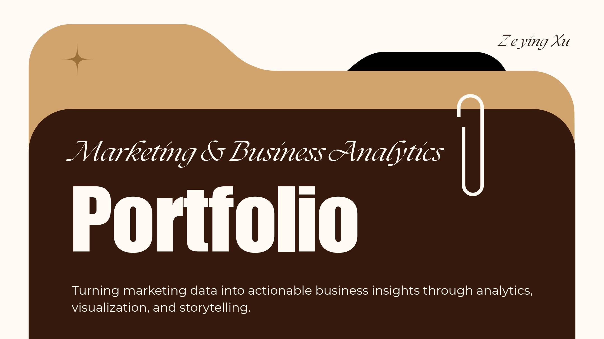

Marketing & Business Analytics
Portfolio
Turning marketing data into actionable business insights through analytics, visualization, and storytelling.
Meet
Zeying Xu
3+ Years of Marketing Analytics Experience
Turning Marketing Data into Actionable Insights
Experienced in Performance Analysis & Storytelling
Zeying Xu
Core
Skills
Marketing Analytics
Performance Reporting
Tableau Dashboards
Data Storytelling
Content Analysis
Creative Production
Pages 1-3
Meet Zeying Xu
3+ years of marketing analytics experience, performance analysis, and storytelling.
